Dish photo credits
Café Parvaneh is a made-up restaurant on a sample menu. The dish photos are illustrative stand-ins from Wikimedia Commons, used under the licences below and resized to thumbnails. They are not photos of this restaurant’s food. Click a title for the original file and full licence.
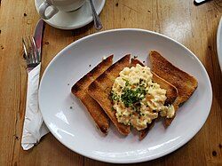
Akuri on toastScrambled eggs on toast - Joe's Cafe 2024-04-14.jpg by Andy Li, CC0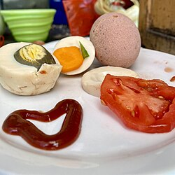
Boiled eggs, twoBoiled eggs on a white plate.jpg by Nana Pearls, CC0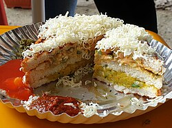
Bombay sandwichBombay cheese sandwich.jpg by Wind Hashira, CC BY-SA 4.0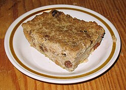
Bread puddingRew13c05-745a Bread Pudding.JPG by Roly Williams, CC BY-SA 3.0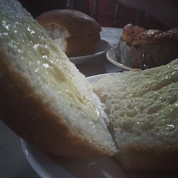
Brun maskaBrun Maska.jpg by Avinashvh1n1, CC BY-SA 4.0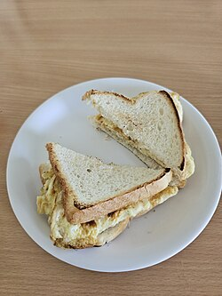
Brun omeletteBread Omelette 2.jpg by Gannu03, CC BY-SA 4.0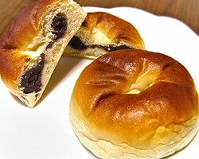
Bun jamBean-jam-bun,anpan,katori-city,japan.JPG by katorisi, CC BY 3.0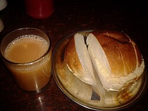
Bun maskaBun Maska Pav.jpg by Sanket Oswal, CC BY-SA 4.0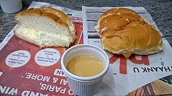
Bun maska jamBun-Maska.jpg by Anoopb15, CC BY-SA 4.0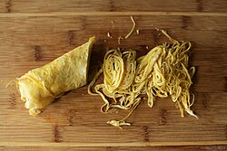
Bun omeletteOmelette on cutting board.jpg by HungryHuy, CC BY 2.0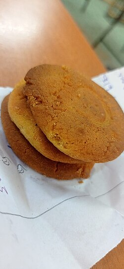
Butter biscuitsButter biscuits.jpg by Anandha abirami Govindan, CC BY-SA 4.0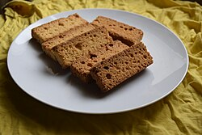
Cake ruskقرشلة، بقسماط، Cake Rusk.jpg by فيصل العدناني, CC BY-SA 4.0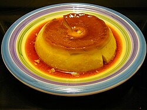
Caramel custardHomemade Flan.jpg by Cary Bass, CC BY-SA 2.5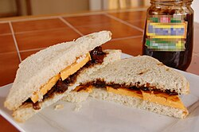
Cheese chutney sandwichCheese and Pickle Sandwich Step 4 (8576760021).jpg by LearningLark from United States, CC BY 2.0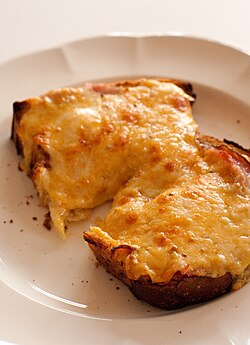
Cheese toastCheese on toast-11.jpg by jules, CC BY 2.0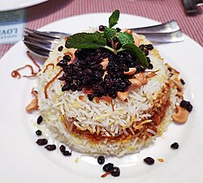
Chicken berry pulaoParsi Mutton Berry Pulao.jpg by Sumit Surai, CC BY-SA 4.0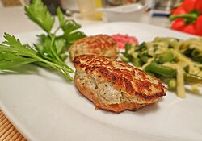
Chicken cutlet & gravyChicken cutlets.jpg by nayeli @ nyam.ru, CC BY 3.0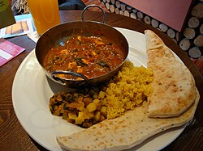
Chicken dhansak (Sundays)Chicken Dhansak (3173280389).jpg by David Pursehouse from Kawasaki, Japan, CC BY 2.0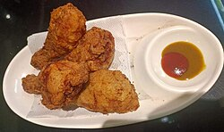
Chicken farchaFried chicken drumsticks.jpg by Mumujit, CC BY-SA 4.0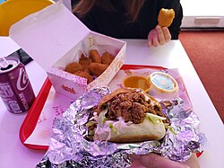
Chicken mayo sandwichMaggie Mayo Hot Chicken Sandwich and Veggie Strips with Mango Hab dip - Lost Boys Land.jpg by Andy Li, CC0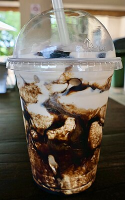
Chocolate milkshakeChocolate milkshake ... 😋.jpg by Bernard DUPONT, CC BY-SA 4.0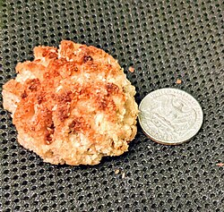
Coconut macaroons, twoCoconut macaroon.jpg by Gzuckier, CC BY-SA 4.0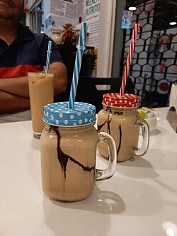
Cold coffeeCold Cofee op.jpg by Wind Hashira, CC BY-SA 4.0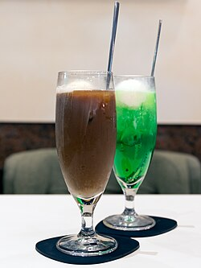
Cold coffee with ice creamCoffee float and ice cream soda 2017 Ginza Renoir 1.jpg by Morio, CC BY-SA 4.0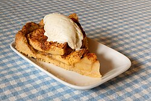
Cream rollApple cake with vanilla ice cream 2.jpg by W.carter, CC0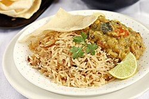
Dal pulao with kachumberVegetable Dhansak With Brown Rice.jpg by Aparna Balasubramanian, CC BY-SA 4.0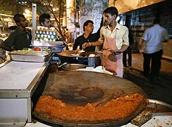
Egg bhurji pavEgg bhurji with pav (bread).jpg by Urniel, CC BY-SA 4.0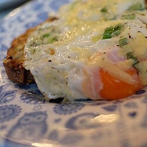
Egg kejriwalKejriwal- Two fried eggs on chili cheese toast.jpg by Lachlan Hardy, CC BY 2.0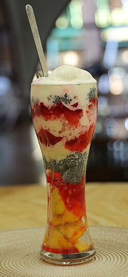
Faloodaঘরে তৈরি ফালুদা.JPG by Kanchana Bose, CC BY-SA 4.0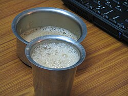
Filter coffeeIndian filter coffee in Dabarah.jpg by Unknown author, CC BY-SA 3.0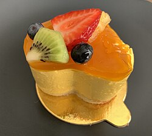
Fruit cake sliceSliced fruit on a cream cake.jpg by OKJaguar, CC BY-SA 4.0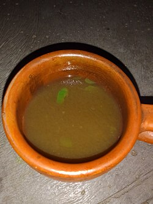
Ginger chaiA Cup Of Ginger Tea.jpg by ওয়ালিদ ভূইয়া, CC0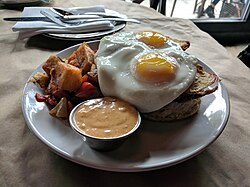
Half fry, two eggsFried egg sunny side up 2.jpg by Kurt Kaiser, CC0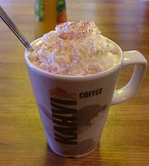
Hot chocolateHot chocolate mug with whipped cream.jpg by User Jonik on en.wikipedia, CC BY-SA 3.0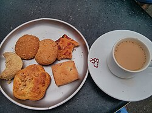
Irani chaiIrani chai and osmania biscuits.jpg by manojkumar chidambaram, CC BY-SA 4.0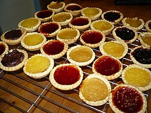
Jam tartJam tarts (3687942537).jpg by Sarah from Bristol, UK, CC BY 2.0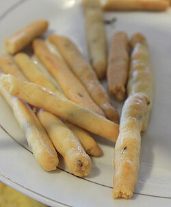
Jeera biscuitsSalted Cookies with Cumin (6138972719).jpg by Leslie Seaton from Seattle, WA, USA, CC BY 2.0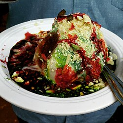
Kala khattaIce Gola.jpg by Vanitasharma, CC BY-SA 4.0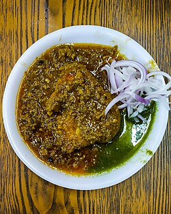
Keema pattice (2 pcs)Kheema petis.jpg by Akshay Bharath, CC BY-SA 4.0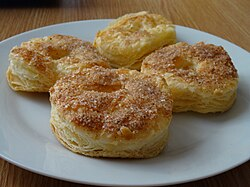
Khari biscuitsPuff pastry with sugar.jpg by LukaszKatlewa, CC BY-SA 4.0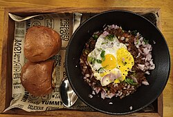
Kheema pavBeef Kheema Pav.jpg by Dr. Chinchu C., CC BY 4.0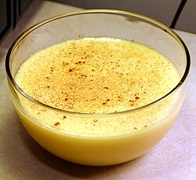
Lagan nu custardCustard.jpg by No machine-readable author provided. Interiot~commonswiki assumed (based on copy..., CC BY-SA 3.0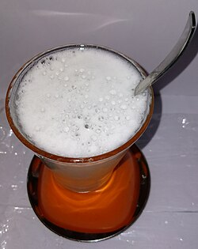
Lemon sodaNimbu Soda Or Lemon Soda.jpg by Manjeshwari poet mysore, CC BY-SA 4.0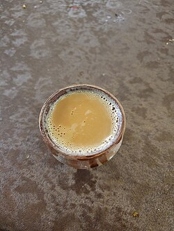
Malai chaiKulhad Chai.jpg by Gannu03, CC BY-SA 4.0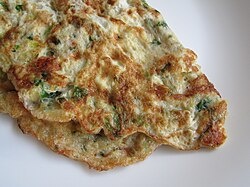
Masala omelette pavMasala omelette.JPG by SwingingUvula, CC BY-SA 4.0 Mawa cakeHome made Mawa Cake.jpg by Sanika Dhumal, CC BY-SA 4.0
Mawa cakeHome made Mawa Cake.jpg by Sanika Dhumal, CC BY-SA 4.0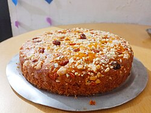
Mawa cakes, box of 6Home made Mawa Cake.jpg by Sanika Dhumal, CC BY-SA 4.0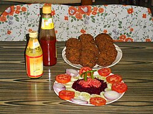
Mutton cutletMutton cutlet and salad.JPG by Prabirghose, CC BY-SA 4.0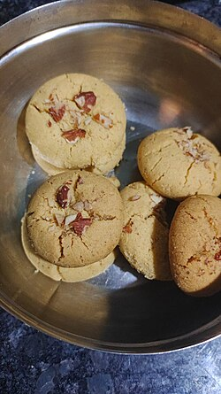
NankhataiNankhatai biscuits.jpg by Yuyutzu, CC BY-SA 4.0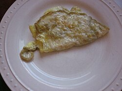
Parsi poro omeletteOmelette on a plate.jpg by Infrogmation of New Orleans, CC BY 2.0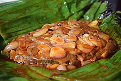
Patra ni machhi (weekends)Fish cooked in banana leaf.JPG by Ravirajdayal, CC BY-SA 4.0 Plum cake (December)Plum cake 08 ies.jpg by Frank Vincentz, CC BY-SA 3.0
Plum cake (December)Plum cake 08 ies.jpg by Frank Vincentz, CC BY-SA 3.0- Pudina chaiMuntthee 02.JPG by Onderwijsgek, CC BY-SA 3.0
- Raspberry sodaRaspberryade.jpg by Ubcule, CC BY-SA 3.0
- Rose milkRose milk ice cream with candied pistachios.jpg by Bhuvana Meenakshi, CC BY-SA 4.0
- Salli boti with pavIMG-20240601-WA0053Mutton curry with potatoes.jpg by Fouzia's Catering Services, CC BY 4.0
- Shrewsbury-style butter biscuits, 400 g boxShrewsbury biscuits.jpg by Alistair young, CC BY 2.0
- Strawberry milkshakeStrawberry milk shake (cropped).jpg by Renee Comet (Photographer), Public domain
- Sulemani chaiSulemani.jpg by Vj18081991, CC BY-SA 4.0
- Toast ruskRusk eats with tea.jpg by Baap8969, CC0
- Veg puffCurry Puffs.jpg by Earthkingfather, CC BY-SA 4.0
- Veg pulaoVeg pulao, self-cooked, Roing, Arunachal Pradesh, jpg.0002.jpg by Abhi881991, CC BY-SA 4.0


.jpg){kind=link}


.jpg){kind=link}


.jpg){kind=link}


.jpg){kind=link}
.jpg){kind=link}


.jpg){kind=link}